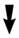
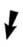

En
1945, le paysan Mohammed Ali Samman découvre
un ensemble de manuscrits.
Eparpillés, vendus et rachetés,
trois itinéraires ont été soigneusement étudiés
par les spécialistes.
|
|

1ère partie confiée au religieux Al-Qummus
Basiliyus Abd el Masih
Elle sera envoyée à l’historien égyptien Raghib qui
la déposera au musée copte du Caire. Elle sera étudiée
par Jean
Doresse, égyptologue
français, et Toga Mina, Directeur Musée Copte
du Caire
|
|
|
|
2ème partie tombée
entre les mains d’un hors-la-loi du village de Samman,
nommé Bahij
Ali, qui la vendra à Phocion Tano,
un autre antiquaire du Caire.
Le
gouvernement tentera de la racheter à Phocion
Tano.
Celui-ci a vendu entre temps :

l'un des codex
(le N°14) à Alfredo
Malardi.
Peu de temps après, la police concluera au suicide après
la découverte de son corps dans un lac transalpin.
Thomas Malko aura eu le temps de
lui racheter avant de disparaître à son tour de
raison inexpliquée.
Peter Volker retrouvera par le plus
grand des hasards la trace du codex orphelin, ce qui
lui coûtera la vie.
|
les autres codex à Miss Dattari, une
collectionneuse italienne, habitant la capitale égyptienne.
La
collection Dattari devient en 1952 propriété du Musée Copte
du Caire.
|
|
|
|
|
3ème partie vendue
au marché
noir, et rachetée au Caire par l’antiquaire Albert
Eid. Il le fera passer en fraude, hors de l'Egypte. Ne parvenant
pas à le vendre aux USA, il le garde dans un coffre-fort en Belgique.
A sa mort, sa femme cherchera à le vendre.
Ce
sera le professeur Gilles Quispel qui en fera
l'acquisition par l'intermédiaire de la fondation Jung de Zürich.
|
|